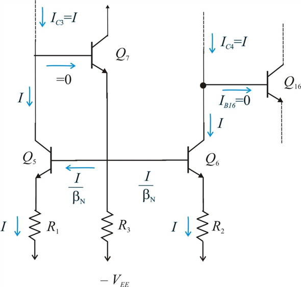

Step 1:
Draw the circuit for the dc analysis of the input stage of 741 operational amplifier.

Step 2:
The resistors  and
and  are deliberately mismatched to compensate for the operational amplifier input offset voltage.
are deliberately mismatched to compensate for the operational amplifier input offset voltage.
(a)
Consider the situation when both input terminals are grounded.
From the given circuit we see that while  still conducts a current equal to
still conducts a current equal to  , the current in
, the current in  will be smaller by .
will be smaller by .
Determine the expression for .
Also,
Here,
 denotes the emitter resistance of each of the transistors.
denotes the emitter resistance of each of the transistors.
Substitute for .
Substitute for .
Step 3:
Substitute  for .
for .
Thus, the relative mismatch is  .
.
Step 4:
(b)
Consider the ratio,
Substitute for  ,
,  for
for  ,
,  for
for  and
and  for .
for .
Thus the ratio to trim a  offset to zero is .
offset to zero is .
Step 5:
(c)
As the resistor  is shorted, the ratio,
is shorted, the ratio,
Determine the maximum offset voltage that can be trimmed by equating the ratio, to .
Substitute  for
for  , for and
, for and  for
for  .
.
Thus, the maximum offset voltage is .